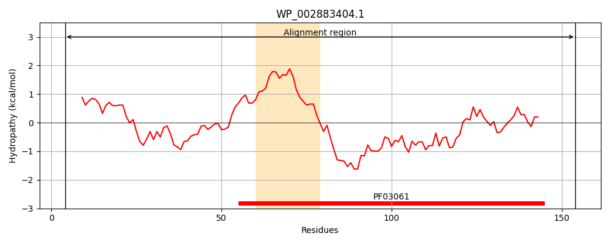
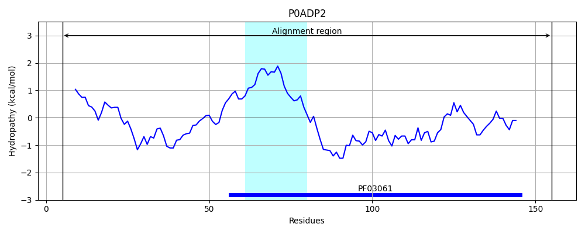
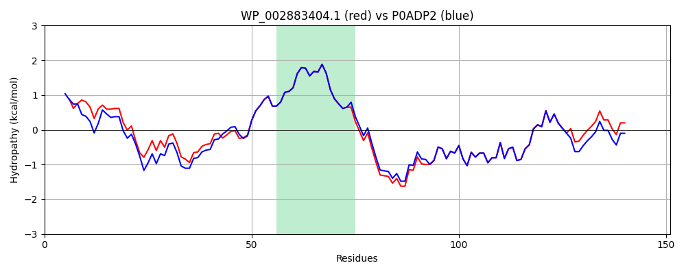

Hit Accession: P0ADP2
Hit TCID: 9.B.371.1.8
Hit Description: gnl|BL_ORD_ID|8757 gnl|TC-DB|P0ADP2|9.B.371.1.8 Uncharacterized protein YigI OS=Escherichia coli (strain K12) OX=83333 GN=yigI PE=4 SV=1
Mach Len: 151
e:0.000000
Query TMS Count : 1
Hit TMS Count: 1
TMS-Overlap Score: 1.000000
Predicted Substrates:None
BLAST Alignment:
Score: 710 , Bit scores: 278 bits, E-value: 8.1e-98, Alignment length: 151, Percentage identity: 92
Query: 4 LTAEAALKLVGEIFVYHMPFNRALGLELERYEKAFAQLSFNNQPMMVGNWAQSILHGGVIASALDVAAGLVCVGSTLTRHDTINEEELRQRLSRMGTIDLRVDYLRPGRGERFTATSTLLRAGNKVAVARVELHNEAQVYIASATATYMVG 154
LTAE ALKLVGE+FVYHMPFNRALG+ELERYEK FAQL+F NQPMMVGNWAQSILHGGVIASALDVAAGLVCVGSTLTRH+TI+E+ELRQRLSRMGTIDLRVDYLRPGRGERFTATS+LLRAGNKVAVARVELHNE Q+YIASATATYMVG
Sbjct: 5 LTAEQALKLVGEMFVYHMPFNRALGMELERYEKEFAQLAFKNQPMMVGNWAQSILHGGVIASALDVAAGLVCVGSTLTRHETISEDELRQRLSRMGTIDLRVDYLRPGRGERFTATSSLLRAGNKVAVARVELHNEEQLYIASATATYMVG 155 | Protein Hydropathy Plots: |
|---|
|  |  |
Pairwise Alignment-Hydropathy Plot:
|
|---|
|  |